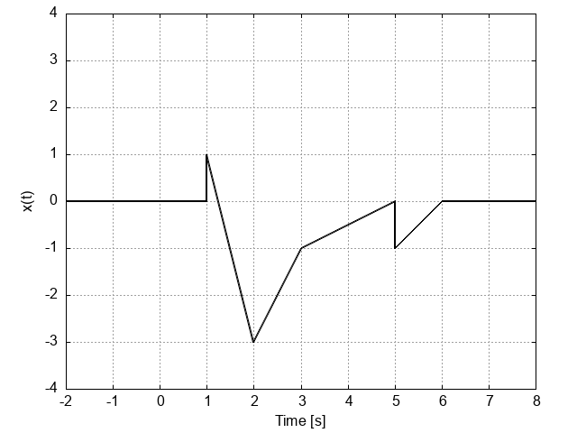

ID Number: 21101819
Group No.: 3
QUESTION 1:
Given the signal x(t)

found in the PNG-file named q1.png, edit the C-function
with the prototype
double x(double t).
found in signals.c so that it defines x(t) as a piecewise function. Note that
your definition must make use of inclusive relational operators e.g. <= or >=
where it applies.
QUESTION 2:
Using the signal x(t) from QUESTION 1, find the piecewise definition of
y(t) = x(-t-2)
Edit the C-function with the prototype
double y(double t)
found in signals.c so that it defines the y(t) after the independent variable
manipulation of x(t).
QUESTION 3:
Using the signal y(t) from QUESTION 2, define y(t) using shifted and scaled
step signals u(t) and tu(t). Edit the C-function with the prototype
double z(double t)
for your definition. Note that the unit step signal u(t) has been provided in
signals.c. As a hint, the mathematical expression u(t+1) + tu(t-2) would be
defined as
u(t+1) + t*u(t-2).
QUESTION 4:
Given the relationship
_
/ t
x(t) = | r(T) dT
_/ - oo
double r(double t)
found in signals.c. Note that for infinity use the given identifier Inf.